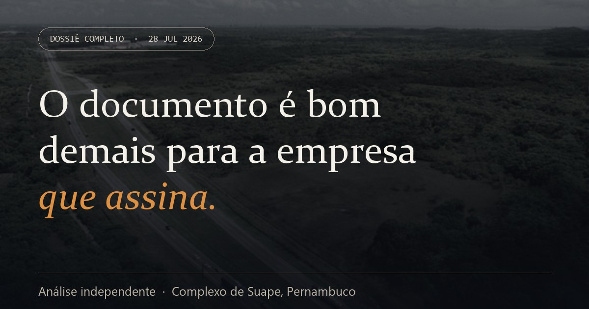
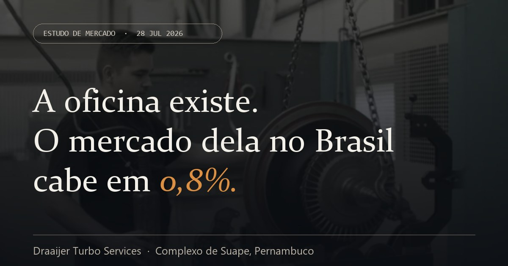
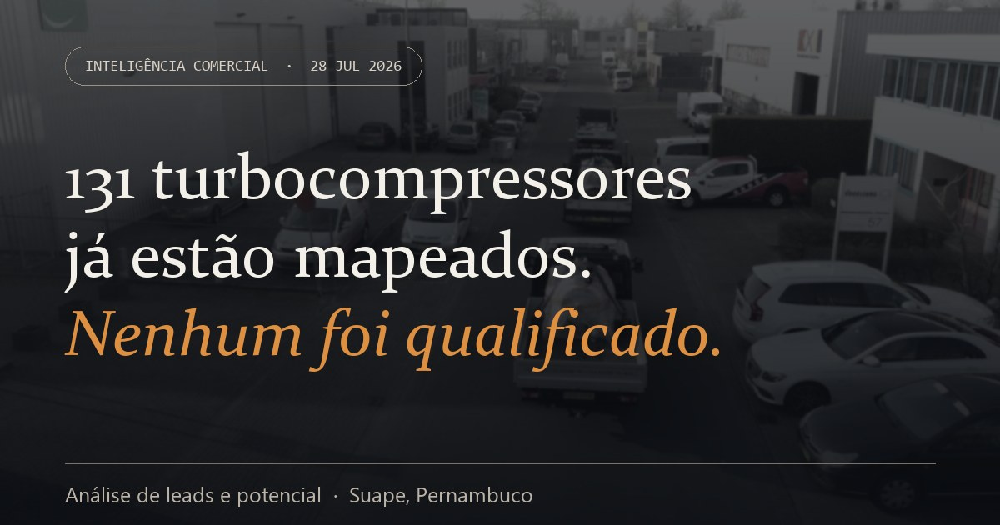

Dossiê completo O documento é bom demais para a empresa que assina Onze confrontos entre o que o material afirma e o que os dados primários mostram, a due diligence das duas empresas envolvidas, dezesseis riscos em matriz de severidade e o parecer final.
Estudo de mercado A oficina existe. O mercado dela no Brasil cabe em 0,8% O tamanho real do mercado brasileiro e pernambucano em dado do operador do sistema, o resultado dos leilões de março de 2026, o perfil da empresa holandesa, os sócios e a capacidade técnica comparada ao setor europeu.
Inteligência comercial 131 turbocompressores já estão mapeados. Nenhum foi qualificado Ranking de potencial das nove contas, os gatilhos públicos que ninguém usou, a segmentação em três trilhas e a sequência de abordagem recomendada.